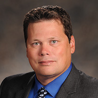

Please feel free to download a copy of my Résumé.
Jody Atkins
7 Pumpkin Place
Durham, NC 27703
(919)808-1880
jodiath@hotmail.com

| Professional experience | |
| 2014 to Present | Senior Datacenter Engineer, RTI International, Research Triangle Park, NC |
| Install, configure and administer server hardware (Dell, HP,IBM, etc.) both domestically and internationally | |
| Install, configure and administer operating systems (Windows 2003-2012, RHEL, Fedora, etc.) | |
| Create and manage operating system deployment infrastructure | |
| Install and administer datacenter infrastructure power and environmental optimization | |
| Monitor and work with vendors on preventative maintenance and troubleshooting of multiple CAT Flywheel-UPS 300s, APC Symmetra 40kWs, Liebert 610s and APC 750-5000 series both domestically and internationally | |
| Install, configure and administer Schneider StruxureWare software to monitor and adjust datacenter environmentals and power consumption | |
| Work with customers and vendors to troubleshoot hardware and software issues to fruition | |
| Work with Park Place Technologies to troubleshoot extended warranty hardware issues domestically and internationally | |
| Work with multiple vendors to install and troubleshoot network connectivity issues, power issues and new projects both domestically and internationally | |
| 2007 to 2014 | Senior Systems Specialist I, RTI International, Research Triangle Park, NC |
| Install, configure and administer RSA 6.1 and 7.1, Steel Belted Radius, Checkpoint Firewalls (NGX and Edge), TippingPoint Intrusion Prevention Systems and SMS, Juniper SRX Firewalls and Juniper SPACE applications | |
| Install, configure and administer VASCO Identikey/Digipass and RSA SecurID two factor authentication services | |
| Install, configure and administer VMware Infrastructure 3.5 and vSphere 4.0 | |
| Install, configure and administer Pointsec/Checkpoint Whole Disk, File level and Data Path Encryption worldwide | |
| Work with RH Linux servers and clients via moderate troubleshooting and repair | |
| Support Secure Zip Enterprise both desktop and company policy level worldwide | |
| Install, configure and administer Nitro SIEM Devices (ESM, ELM, etc.) | |
| Install, configure and administer Kiwi, Juniper STRM and PRTG Log and Event management application or appliance | |
| Evaluate, implement, and document Riverbed Optimization/acceleration software | |
| Troubleshoot and administer Juniper Network Connect, Proxy, Pulse and Checkpoint Secure Client Virtual Private Connection products | |
| Install and administer Nessus Security Center and Scanners company wide | |
| Install, configure and administer IBM Security Appscan | |
| 2007 | Systems Administrator III, RTI International, Research Triangle Park, NC |
| Install, configure and troubleshoot Windows Server platforms (x86/x64) | |
| Create and Configure multiple websites on both IIS 6.0 and Tomcat 6.0 | |
| Perform patch management upon various Windows servers (SQL, IIS, Cluster, etc.) | |
| Troubleshoot and repair connectivity issues via IP, Firewall, DNS, etc | |
| Configure and troubleshoot F5 Load balancers | |
| Create and manage multiple Window SQL 2000/2005 servers | |
| Work with multiple customers to decipher and repair issues to fruition | |
| 2005 to 2007 | Security Systems Support Specialist, RTI International, Research Triangle Park, NC |
| Install, configure and troubleshoot Windows Server platforms supporting multiple security software packages (i.e. nDVR, Win-Pak, Manitou, etc.) | |
| Provide 24/7 coverage via remote desktop access and in-person support | |
| Support Win-Pak card access system covering campus and remote locations | |
| Install and configure racks, servers, switches and workstations | |
| Upgrade, install and configure multiple camera surveillance (software/hardware) | |
| Train personnel on multiple systems and troubleshooting techniques | |
| 2004 | Enterprise Platform Support Technician, Microsoft, Charlotte, NC |
| Troubleshoot multiple operating systems i.e. (NT, XP, 2000, and 2003) to diagnose and resolve back up, disaster recovery and server down issues encompassing a single workgroup or entire domain both critical and non-critical | |
| Consult on the installation, configuration and repair of multiple hardware and configurations (ISCSI, RAIDs, SATA Drives, etc.) | |
| Diagnose Windows stop messages (Blue Screen Of Death) by debugging memory dumps and providing solutions | |
| Troubleshoot customer's issues via phone, e-mail and web to diagnose most effective and time efficient path to get systems up and running | |
| Repair file systems by editing the MBR to correctly portray the layout of the partitions | |
| Support Virtual Server 2005 and Virtual PC in both live and test environment scenarios per customer's deployment needs | |
| Deploy and troubleshoot RIS and ADS (2000 and 2003) to perform mass enterprise deployments of Windows 2000, XP and 2000/2003 servers | |
| 2001 to 2004 | Network Administrator/Systems Analyst, American Social Health Association, Durham, NC |
| Setup, configured and maintain Cisco 2600/2900 series routers | |
| Perform domain migration from NT to Windows 2000 Active Directory | |
| Create NT/2000/2003 user and Exchange 5.5 e-mail accounts | |
| Perform migration from Windows 95, 98 and Linux 6.1 to Windows 2000 by way of Microsoft RIS and Norton Ghost | |
| Develop and support SQL Server Database information transportation and back-up | |
| Create scripts in Kixtart, WSH and Notepad/WordPad to perform various task | |
| Implement and support Microsoft RAS and Netscreen VPN for mobile networking with Linux and Windows operating systems | |
| Configured and maintained NetScreen-208 (Firewall and VPN) | |
| 2001 | Software Engineer/Desktop Support/Help Desk Support/Team Leader, TEKSystems, Research Triangle Park, NC |
| Migrate BB&T regional and branch locations from Windows 95 to Windows NT format | |
| Perform daily desktop support for Windows 95 and Windows NT, at local branches, throughout North Carolina, South Carolina and Virginia | |
| Organize the transportation, hardware and support needs for a team of technicians on a day-to-day basis | |
| Prepare daily activity reports, trouble and inventory logs of the various locations | |
| Troubleshoot installation, software and hardware, problems associated with the conversion from Windows 95 to Windows NT | |
| Maintain good customer service relations with both internal and external clients | |
| 1995 to 2001 | LAN Support/Web Master/Senior Service Technician, ALLTEL Communications, Morrisville, NC |
| Repair cellular communications equipment down to the component level with the use of programming, service, and installation manuals | |
| Install multiple cellular equipment from various manufacturers (e.g. Motorola, Panasonic, Ericsson) | |
| Interact with internal and external customers to verify malfunctions with equipment to facilitate proper and prompt repair | |
| Maintain communications with manufacturers on a day to day basis to enhance knowledge of equipment and quicken repair process | |
| Create, maintain, and monitor the Mastershop web pages supporting all service departments | |
| Install, configure and update computer software and hardware (e.g. Windows 95, Windows 98, Windows NT&2000, sound, video, and Ethernet cards) | |
| Resolve day to day computer issues as they arise (e.g. passwords, programs, and new account creations) | |
| Use Microsoft Office Suite to create Excel, Word forms, and Access databases to help speed the repair process | |
| 1990-1995 | Communications Security Equipment Technician, United States Marine Corps |
| Held DoD SECRET clearance | |
| Repair communications security equipment, such as computers, radio systems, transmitters, antennas, and receivers | |
| Use various manufacturer blueprints and maintenance manuals along with hand tools and test equipment for repairs | |
| Converse with equipment operators to ascertain problems with equipment before breakdown and during repair to determine human or equipment error | |
| Align, adjust, and calibrate equipment and test instruments according to specifications | |
| Maintain records of repairs, calibrations, and tests | |
| Resolve day to day computer issues as they arise (e.g. passwords, programs, and new account creations) | |
| Install radio and cryptographic equipment in military, commercial, and industrial establishments |